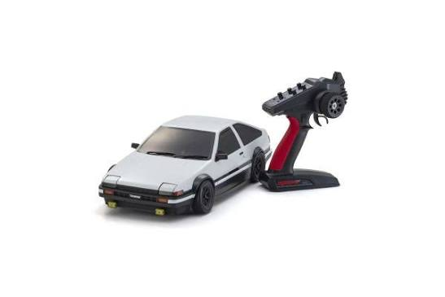

Kyosho Fazer D2 1:10 Scale RTR
This is my recommendation for a beginner on-road RC car. The Kyosho Fazer D2 is a street drift car that is based off the famous Toyota Corolla AE86. Kyosho supplies plenty of spare parts and tools to keep your Fazer D2 running. They also supply several upgrade kits for added power or cosmetics. The chassis can be easily adjusted to allow for different Kyosho bodies to fit, allowing you to change the style with minimal effort. The Fazer D2 is powered by a brushed electric motor. Before you buy, Kyosho does not supply the remote batteries, car batteries, or charger, and they recommend using 7.2V Ni-MH batteries.